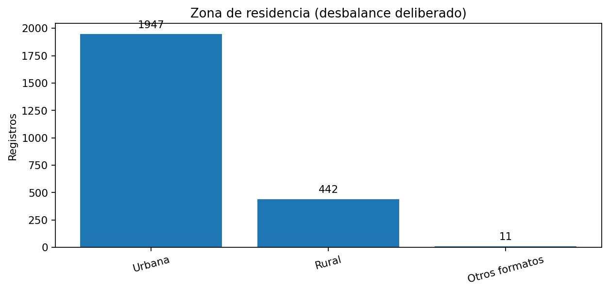
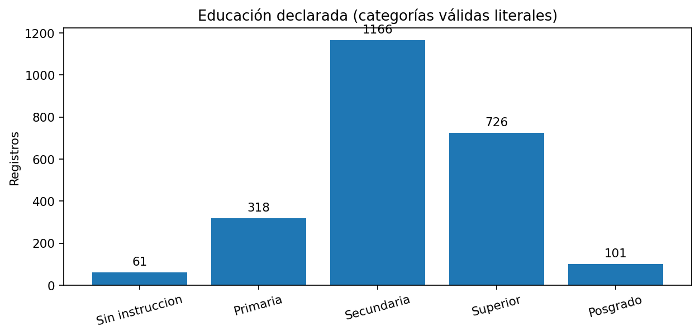
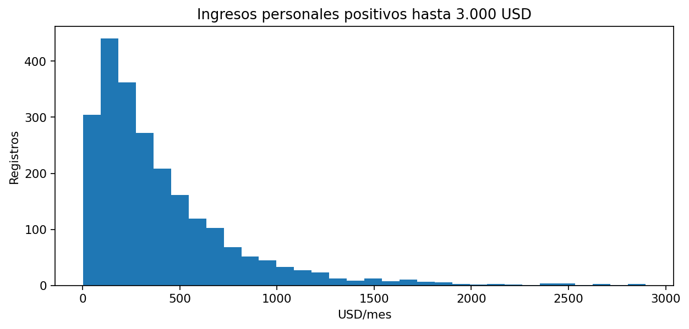

Resumen del conjunto
1. Zonas
La encuesta fue intencionalmente desbalanceada: predominan los registros urbanos. Los conteos no son estimadores nacionales.

2. Educación
Los niveles secundario y superior predominan en la muestra sintética. Las etiquetas inválidas requieren validación.

3. Ingresos
Para la mayoría de los encuestados se generaron ingresos positivos. Se introdujeron pocos ceros y faltantes y algunos formatos, negativos y extremos para auditar.

4. Calidad e integridad
El alumnado deberá detectar claves duplicadas, referencias de hogares ausentes, fechas incoherentes, categorías no estándar, ingresos inválidos y relaciones lógicas que requieren revisión.
Ejemplos de comprobación externa: filas involucradas en duplicidad de ID persona: 36; referencias a hogares no existentes: 10.
5. Entregables y conclusiones
La secuencia termina con un RDS verificable, un informe HTML reproducible y un sitio web estático Quarto con metodología y resultados. La bitácora conserva propuestas, no autorizaciones.